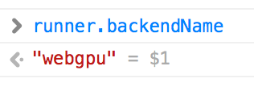

Use with Caffemodel¶
In this section, you will learn about how to convert your caffemodel
into GraphDescriptor, and run GraphDescriptor on your web page.
1. Convert Caffemodel into GraphDescriptor¶
See jupyter notebook (caffenet_conversion.ipynb) to see how to convert model offline.
2. Run on web browser¶
In this section, I’ll describe how to run generated descriptor on web browser.
you can view complete codes (HTML and JS file) in /example/convert_caffe.
First, You have to initialize DescriptorRunner
and load model data.
let runner = await WebDNN.load('./output');
WebDNN automatically select the best backend based on Browser type and compiled model data on the server.
You can check the backend type
console.log(runner.backendName);

Then you can get input and output variable references (SymbolicFloat32Array type).
let x = runner.inputs[0];
let y = runner.outputs[0];
That’s all for initialization. You only have to do this at once in the application.
Let’s classify this image.

First, set input data.
// loadImageData() returns image data as Float32Array
x.set(loadImageData());
Next, run model.
await runner.run();
That’s all.
Show computed vector and predicted label.
let y_typed_array = y.toActual(); // convert SymbolicFloat32Array to Float32Array
console.log('Computed vector', y_typed_array);
console.log('Predicted Label', WebDNN.Math.argmax(y_typed_array));

Congratulation! LabelID:230 is "Shetland sheepdog" in ImageNet. It looks work well.